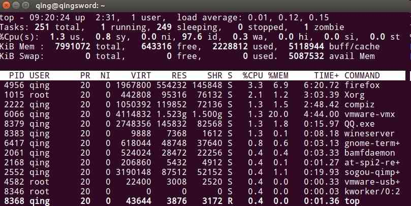

[RHEL]-4-进程管理
引言
这篇文章主要介绍RHEL比较常用的五个进程管理命令——ps、top、kill、pkill、pidof。
文章目录
0×1.使用ps查看用户进程
ps的常用参数如下：
l 长格式输出
u 按用户名和启动时间的顺序来显示进程
f 树形显示（父进程和子进程一目了然，想要完全终止某个进程，需要kill这个进程的父进程，仅仅是结束子进程父进程可能重新创建此子进程）
a 显示所有用户的所有进程（包括其他用户）
x 显示无控制终端的进程
常用的参数组合为aux，请看下面的实例：
[root@qingsword.com ~]# ps -aux USER PID %CPU %MEM VSZ RSS TTY STAT START TIME COMMAND root 1 1.5 0.3 52840 6644 ? Ss 07:28 0:02 /usr/lib/systemd/systemd ..省略部分输出.. #输出各字段详解 #USER列：进程的所有者 #PID列：进程的唯一ID，ID为1的进程是内核加载完成后启动的第一个进程，在RHEL7以上版本中为systemd，在HREL6以下版本中为init，也是所有进程的父进程 #%CPU列：当前进程CPU使用率 #%MEM列：当前进程内存使用率 #VSZ列：虚拟内存使用量(KB) #RSS列：固定内存量(KB) #TTY列：进程所在终端 #STAT列：进程状态信息 #R(运行)正在运行或在运行队列中等待 #S(中断)休眠中, 随时可以被其他程序唤醒 #D(不可中断)收到信号不唤醒和不可运行, 进程必须等待直到有中断发生 #Z(僵尸)子进程将要退出还没有完全退出时，父进程收集并释放其占用的资源，这个短暂的状态称为僵尸状态，如果子进程释放失败，将变成僵尸进程，对系统稳定性造成影响 #T:(停止)进程收到SIGSTOP, SIGSTP, SIGTIN, SIGTOU信号后停止运行 #s(小写)进程的领导者（在它下面有子进程） #< 优先级高的进程 #N 优先级低的进程 #L 部分数据被锁进内存的进程 #+ 后台进程组 #l 多线程进程 #START列：进程被启动的时间 #TIME列：进程从启动到现在，占用过的CPU时间总和 #COMMAND列：启动这条进程所使用的命令与参数
0×2.使用top查看用户进程
使用top命令可以进入top进程管理界面，这是一个类似于"windows任务管理器"的进程界面，默认每3秒刷新一次，默认将占用CPU最多的进程排在最上面，界面如下：
现在来逐行解释一下这个界面：
第一行：top名称 - 系统当前时间 up top运行了多长时间，有多少用户(终端)登录了系统，系统负载:1分钟 5分钟 15分钟；
系统负载量一般在1以下是比较好的一个状态，如果长时间在3以上，就说明系统负载率非常的高了，要考虑更换硬件。
第二行：总进程数，当前运行的进程数，休眠的进程数，已经停止的进程，僵尸进程数；
第三行：CPU信息: 用户进程占用CPU总百分比 us, 内核空间占用CPU百分比 sy, 用户进程空间内改变过优先级的进程占用CPU百分比 ni, 空闲CPU百分比 id, 等待输入输出的CPU时间百分比 wa, 0.0 hi, 0.0 si, 0.0 st；
最重要的两个参数，第一个为CPU总使用率，第二个为CPU空闲率，在top界面下，按下键盘数字键1，可以分别查看每个CPU内核的使用情况；
第四行：内存使用情况: 总的内存量 total，空闲内存 free，已经使用的内存 used，用作内核缓存的内存量 buffer/ 缓冲的交换区总量 cached；
第五行：交换空间（一般是当内存不足时从硬盘借用的一部分空间，本例中的系统没有配置swap，所以全部为0，如果划分了swap分区，并且交换分区的used值长时间不为0，就要考虑是不是内存不足了）；
第六行：这一行空行，用来与top交互，当按下s键时，会在这里提示你输入一个进程刷新时间，单位秒，默认为3秒，当按下k键时提示输入一个需要结束的PID，两次回车后就能够结束这个进程；
第七行为用户进程列描述信息，各列含义如下：
PID：进程id
USER：进程所有者的用户名
PR：优先级（数值越高，优先级越低）
NI：nice值（数值越高，优先级越低）
VIRT：进程使用的虚拟内存总量，单位kb，VIRT=SWAP+RES
RES：进程使用的、未被换出的物理内存大小，单位kb，RES=CODE+DATA
SHR：共享内存大小，单位kb
S：进程状态（同ps）
%CPU：上次更新到现在的CPU时间占用百分比
%MEM：进程使用的物理内存百分比
TIME+：进程使用的CPU时间总计
COMMAND：启动进程所使用的命令与参数
top中常用的指令如下：
使用"shift+>"和"shift+<"来改变进程的排序（默认使用CPU使用率排序）；
s 设置进程刷新时间间隔，单位秒，按空格可以立即刷新列表；
k 输入PID即可杀死进程；
M 按照内存占用由大到小排列；
P 按照CPU占用由大到小；
Pg Up和Pg Dn 上下翻页；
Home和End 到首页或尾页；
q 退出top；
h help命令提示；
0×3.使用pidof查询进程PID
除了使用上面两个命令外，有时候我们仅直到进程的名称要想查看进程的PID，可以用到pidof命令，打开两个终端，其中一个运行top命令，然后在另一个终端中查找top进程的pid：
#下面部分命令可能需要root权限 #找出pid后，可以使用kill命令来强行结束top进程 [root@qingsword.com ~]# pidof top 9407 [root@qingsword.com ~]# kill 9407 #pkill命令接收一个进程名称来结束这个进程，下面的命令与上面效果相同 [root@qingsword.com ~]# pkill top #如果一些进程有多个子进程（比如httpd）pidof时会出现很多PID号，使用kill逐个结束略显繁琐，此时可以使用killall一次性结束这个进程和所有子进程 [root@qingsword.com ~]# pidof httpd 9408 9409 9410 [root@qingsword.com ~]# killall httpd
Ps：kill接收一个pid号用于结束单个进程，pkill接收一个进程名称用于结束单个进程，killall接收一个进程名称用于结束单个或多个进程与其子进程。